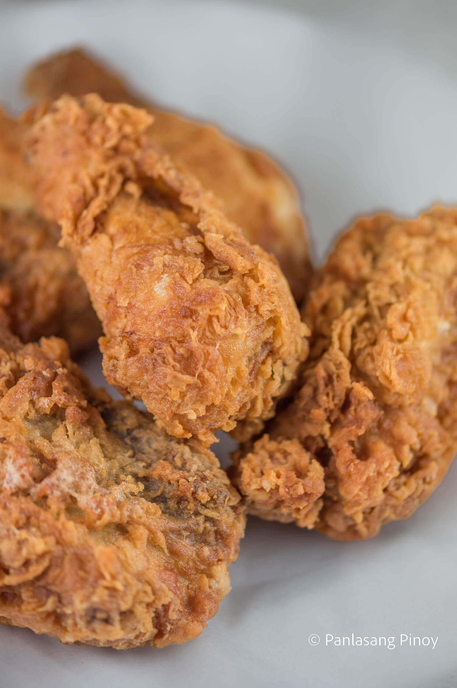

Crispy Fried Chicken

Description
What is comfort food to you? If you’re like me, and many other people in the world, one of the images that comes to mind is a gorgeously crispy fried chicken. Simple but flavorful, fried chicken is a treat for both kids and adults alike.
Ingredients
- 3 lbs. chicken cut into individual pieces
- 1 tablespoon salt
- 3 cups cooking oil
- 1 cup all-purpose flour
- ¾ cup evaporated milk
- 1 Knorr Chicken Cube
- 2 eggs
- ¾ cups all-purpose flour
- 1 teaspoon baking powder
- 2 teaspoons garlic powder
- ½ teaspoon salt
- ¼ teaspoon ground black pepper
Steps
- Rub salt all over the chicken. Let it stay for 15 minutes.
- Heat the oil in a cooking pot.
- Prepare the batter. Start by pressing a fork on the chicken cube until it is completely squashed. Combine it with warm milk. Stir until well blended. Set aside.
- Combine flour, baking powder, garlic powder, salt, and ground black pepper. Mix well using a fork or a wire whisk. Set aside.
- Beat the eggs in a large mixing bowl. Add the milk mixture. Continue to beat until all the ingredients are all incorporated. Add half of flour mixture. Whisk. Add the remaining half and whisk until the texture of the batter becomes smooth.
- Dredge the chicken in flour and then dip in batter. Roll it again in flour until completely covered. Fry in medium heat for 7 minutes per side.
- Remove from the pot and put in a plate lined with paper towel. This will absorb the oil.
- Serve with ketchup or gravy.
- Share and enjoy!
Home